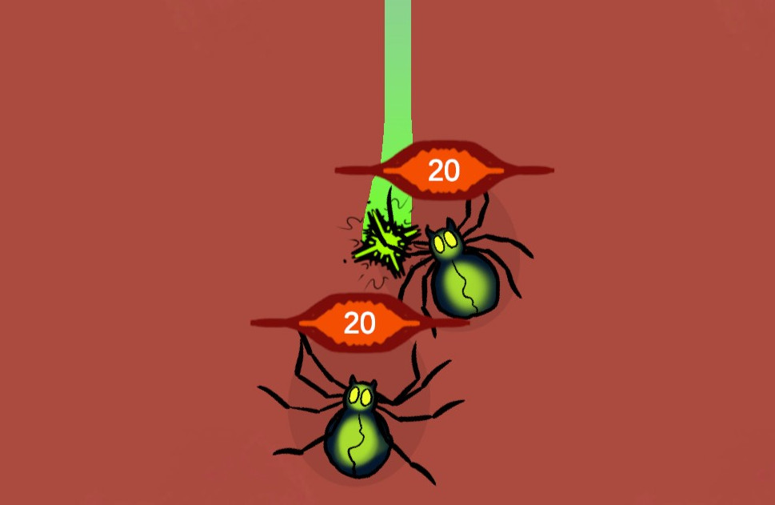

I am a high performance graphics and games engineering student at the University of Leeds. I have done multiple projects in the field of graphics and games in both my academic and personal time. I have learned many different relevant areas of game development, such as C++, C#, Vulkan, OpenGL, Unreal Engine, Unity Engine and glsl. I'm incredibly excited to pursue my interest in the video game industry.
Game engine written in C++, creating game engine architecture including Entity Component Systems and Event systems as well as integrating multiple different libraries for a racing styled game, including Vulkan, SDL3, GLFW, Jolt Physics and Soloud.
Game created within the Ubiquitous Reality Game Engine, written in C++, showcasing the features of the engine in bullet hell themed vehicle game.
Renderer programmed in C++ using Vulkan. Complete with post-processing effects, pbr shading and debugging features. Overall I achieved a first class for this project.
Raytracer programmed in C++; demonstrating reflections (and fresnel), path-tracing (with next-event-estimation), transparency (using Beer's Law) and shadows using area lights. Overall I achieved a first class for this project.
Program written in C++ which reports and adjusts features of a given .obj file, this includes: determining a shape is manifold; file parsing; mesh repair and mesh simplification. Overall I achieved a first class for this project.
Program written in C++, that manually visualises a simple OpenGl visualisation of a Bézier curve. This includes transformation matrix multiplications and a modified deCasteljau algorithm. Overall I achieved a first class for this project.
Program written in C++ using OpenGl for visualisation. Simulation demostrating a stick figure animated using animation data; additionally demostrating polygonal shapes bouncing in a physics simulation. Overall I achieved a first class for this project.
Unreal Engine project demostrating different NPR shaders to recreate an artists style based on different research papers for toon shading and line shading.
Renderer using the C++ and OpenGL to demostrate matrix computations, basic shading, texturing and instancing.
Unity project for the Ludem Dare game jam where the player must fit customers items into a bag so that they can travel to space. (Scored 63rd in humor!).
Unity project originally intended for GMTK game jam 2024 but extended as a personal project. Players must tinker and solve small components to expand the puzzle as large as possible.
Unity project intended for Brackies game jam 2024.2 but sadly I missed the deadline. However, it is one of my first unity projects that I later completed.
A programmed visualisation of Conway's game of life using C++ with SDL.
Unity project created for my EPQ project for which I documented the process in a 3000 word report. I was awarded an A* for this project.